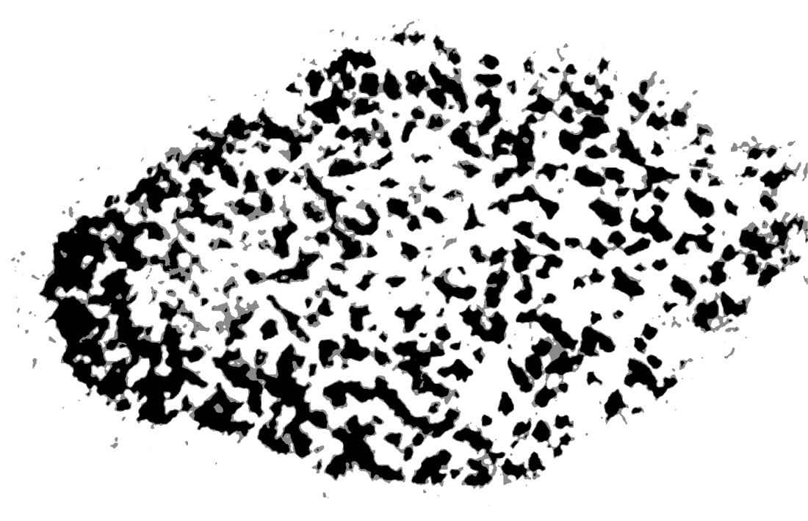

Opportunity Designed
What the mark means
A cloud, an inkblot, and a fingerprint, all at once.

Cloud
See what others miss.
Inkblot
Value what others overlook.
Fingerprint
Own what's unmistakably yours.
Short caption
The Opportunity Designed mark is a cloud, an inkblot, and a fingerprint, all at once: a symbol for seeing what others miss, valuing what others overlook, and owning what is unmistakably yours.
Expanded version
The Opportunity Designed mark holds three ideas at once. The cloud is seeing what others miss. The inkblot is valuing what others overlook. The fingerprint is the outcome: owning what is unmistakably yours. Together, they express how Opportunity Designed approaches growth: find the opportunity that is easy to miss, value what it holds, and turn it into a direction only your business can own.